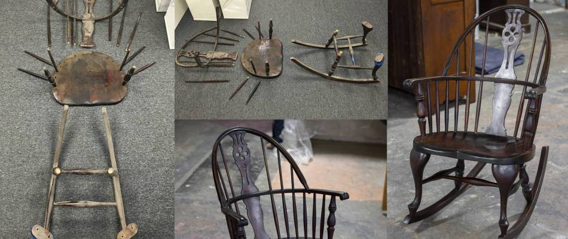
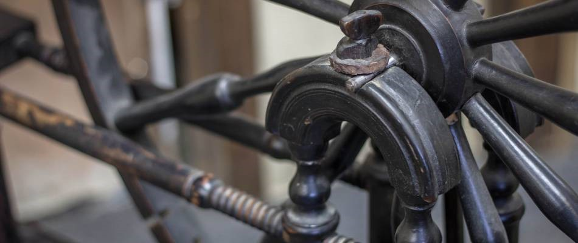
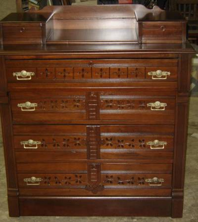

Antique Restoration


Antique items seem to find you in a variety ways - heirloom hand-me-downs from loved ones and family members, as lost treasures in attics or garages or just simply at an antiques shop. Unfortunately, they're not always in the best of shape. Ablyss knows you want to see these beautiful items returned to their glory, and our antique restoration services can do just that.
What is Antique Restoration?
Antique restoration usually means one of two things: restoring an antique item to its like-new condition or preserving its current condition in a way that protects from any further damage or deterioration.
At Ablyss, our goal is to strike a balance between restoration and preservation, ensuring your antique sees a second life that is reminiscent of its early days without sacrificing its structural integrity. Our attention to detail and knowledge of furniture construction and design allows our antique restoration and repair experts to provide the highest quality antique restoration services.
In most cases, antique restoration allows the item to be used once again instead of hidden away in a box or storage to prevent further damage or hide unsightly age. In every case, our goal is to restore items not just for their benefit, but also for your enjoyment.
Our Antique Restoration and Repair Services

Every antique item has experienced a unique lifetime, full of wear and tear. For this reason, Ablyss offers a variety of restoration and repair services to meet the individual needs of your antique furniture. Some of the services our antique restoration experts offer include:Repair of broken pieces
Remanufacture of broken or missing pieces
Finish stripping and re-application
Finish preservation
Sealing
Reupholstery
Our knowledgeable antique restoration team works with care to ensure your furniture piece is treated with the respect it deserves while undergoing the restoration process.
Should I Try DIY Antique Repair?
It may seem like an easy feat to paint or stain a piece of antique furniture, but without a working knowledge of furniture making or upholstery, it's easy to make mistakes that diminish the value and beauty of your antique item. Instead of attempting short-term fixes or difficult repairs on your own, consider Ablyss's services. As antique restoration experts and creators of heirloom-quality furniture, our expert knowledge ensures furniture is a rejuvenated, beautiful piece that you will be proud to display. No piece of furniture is too old or too modern to benefit from our custom restoration and repair services.
Quality Antique Restoration
Ablyss's restoration experts are skilled and experienced in all forms of antique restoration. We work closely with you to find the perfect balance of restoration and preservation while meeting your needs and ideas for the piece, and carefully handle and repair antiques of all ages. If you are considering repair to an item, contact us at 303.935.0949 to find out which of our antique restoration and repair services best fit your needs.